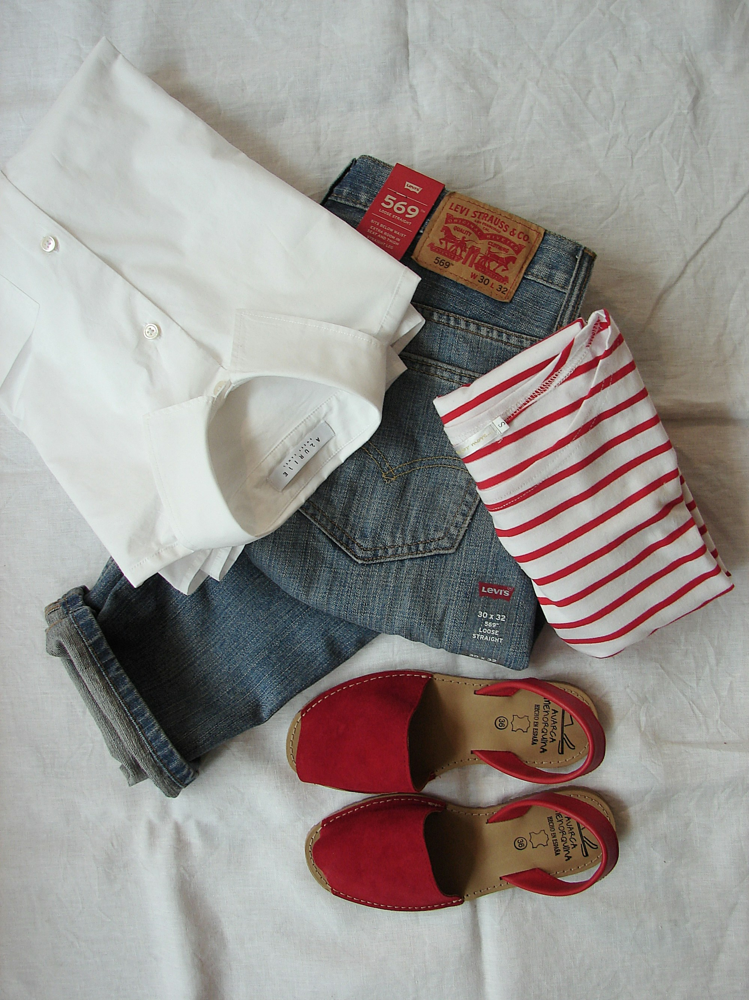
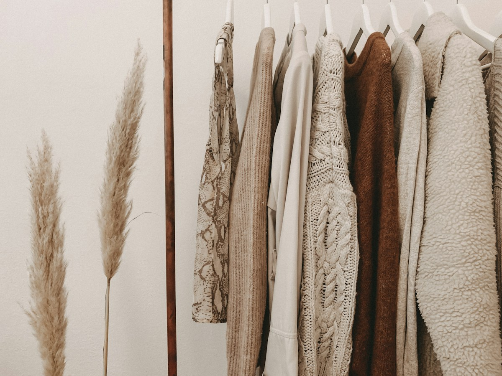

Aurel is a garment export house shaped by a simple belief: great partnerships create great products. We bring together product understanding, manufacturing know-how and a collaborative mindset to support brands at every stage of their apparel journey.
Rooted in the textile ecosystem of Tiruppur, India, we work with a global outlook and deep respect for the people and processes behind every garment.
Work with us ↗
We value open dialogue, thoughtful problem-solving and the details that turn a supplier relationship into a long-term partnership.